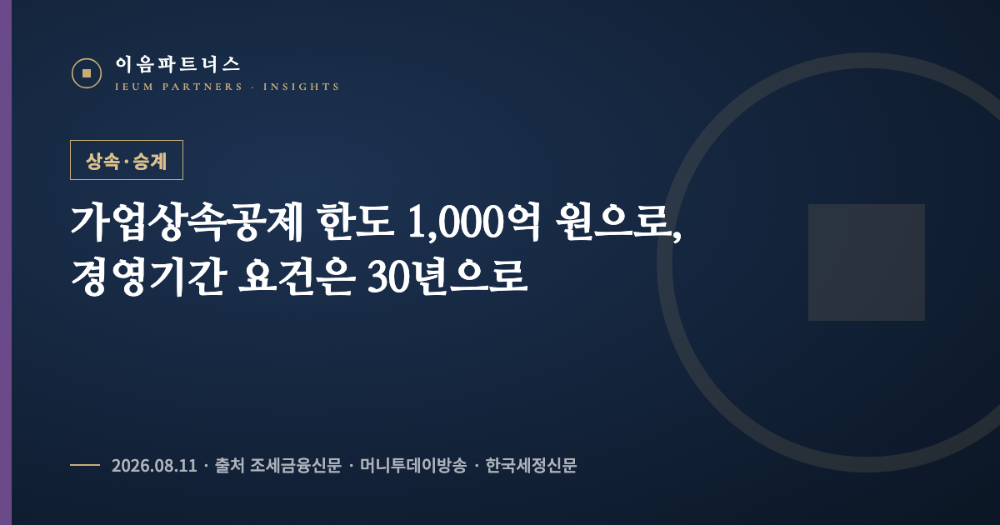

가업상속공제 한도 1,000억 원으로, 경영기간 요건은 30년으로

정부의 2026년 세제개편안에서 가장 눈에 띄는 숫자는 가업상속공제 한도 1,000억 원입니다. 그런데 같은 개편안은 공제를 온전히 받기 위한 경영기간을 10년에서 30년으로 늘렸습니다. 이 글에서는 한도와 경영기간이 어떻게 바뀌는지, 우리 회사 업력에 따라 무엇이 달라지는지 정리합니다.
개편안은 2027년 7월 1일 이후 상속분부터 적용될 예정이며, 아직 국회 심사 중인 정부안입니다(머니투데이방송). 한도보다 먼저 '우리 회사가 요건을 채우는가'를 따져 봐야 하는 개편이라, 업력이 20~30년인 회사라면 특히 미리 살펴보시길 권합니다. 경영기간 계산이 궁금하시다면 카카오톡 채널 이음파트너스에서 함께 확인해 볼 수 있습니다.
공제한도는 어떻게 계산하나
지금은 경영기간에 따라 10년 이상 300억 원, 20년 이상 400억 원, 30년 이상 600억 원으로 구간별 정액입니다. 개편안은 이를 '돌아가신 분의 경영연수 × 20억 원'으로 바꾸고 최대 1,000억 원까지 인정합니다(한국세정신문, 2026년 세제개편안).
| 구분 | 내용 |
|---|---|
| 10년 이상 20년 미만 | 300억 원 → 공제 대상에서 빠짐 |
| 20년 이상 30년 미만 | 400억 원 → 경영연수 × 20억 원(30년에 모자란 기간만큼 사후관리 연장) |
| 30년 이상 | 600억 원 → 경영연수 × 20억 원 |
| 최대 한도 | 600억 원 → 1,000억 원 |
| 사후관리 기간 | 5년 → 10년 |
정부안 산식대로 단순 계산하면 30년 경영한 회사는 600억 원으로 지금과 같고, 40년이면 800억 원, 50년 이상이면 1,000억 원입니다. 오래 경영한 회사일수록 공제가 커지는 구조입니다.
20년은 넘었지만 30년이 안 된다면
돌아가신 분의 경영기간이 20년 이상 30년 미만이면 공제를 받을 수는 있지만, 30년에 모자란 기간만큼 사후관리 기간이 늘어납니다. 예를 들어 25년 경영했다면 기본 10년에 5년이 더해져 15년 동안 요건을 지켜야 하는 셈입니다. 10년 이상 20년 미만 경영한 회사는 원칙적으로 공제 대상에서 빠질 수 있습니다.
함께 강화되는 요건도 있습니다. 최대주주로서 지분 40%(상장법인 20%) 이상을 보유해야 하는 기간이 10년에서 30년(20년 이상 경영한 경우 20년)으로 늘고, 대표이사 재직 요건은 '상속 전 30년 중 15년 이상' 등으로 바뀝니다. 후계자의 사전 근무 기간도 상속 전 2년에서 5년으로 늘어납니다.
경영기간과 업종은 무엇으로 판단하나
국세청에서 일했던 세무사는 30년 요건을 대표이사 취임일, 실제 경영 참여 시점, 이를 뒷받침하는 자료를 종합해 판단한다고 설명합니다. 법인 설립일이 오래됐다는 사실만으로는 부족하다는 뜻입니다. 그는 이제 “우리 회사가 앞으로도 세법상 가업으로 인정받을 수 있을까?”부터 물어야 한다고 조언했습니다(조세금융신문).
업종도 따져 봐야 합니다. 개편안은 공제 업종을 세세분류 기준 727개로 정비하고 병원·약국·주차장업·마트·운송업·프랜차이즈 등을 제외합니다. 자녀가 승계하지 않는 경우를 위해 제3자에게 회사를 넘길 때 양도소득세를 20% 줄여 주는 제도도 2028년부터 2030년까지 한시로 새로 생깁니다.
대표님이 지금 확인할 것
- 현 대표의 실제 경영기간을 보여 줄 대표이사 취임일·등기 기록·경영 참여 자료
- 2027년 7월 이후를 기준으로 경영기간이 20년·30년을 넘는지
- 지분 40% 이상 보유 기간과 후계자의 회사 근무 기간
- 업종이 727개 대상에 들어가는지, 토지 등 비사업용 자산 비중은 어떤지
참고한 자료
- 가업상속공제 1000억 시대, 문턱은 더 높아진다 — 조세금융신문 (2026.08.11)
- 가업상속공제 전면 재설계…제3자 승계시 세제지원도 [2026 세제개편] — 머니투데이방송 (2026.08.03)
- Ⅲ. 공정과세를 위한 조세개혁 추진-가업상속공제 개편(2026년 세제개편안) — 한국세정신문 (2026.08.05)
공제한도가 커져도 요건을 채우지 못하면 의미가 없습니다. 우리 회사 요건 충족 여부가 궁금하시다면 카카오톡 채널 이음파트너스로 문의해 주세요.
※ 이 글은 일반적인 정보 제공을 위한 것으로, 개별 사안은 세무사·노무사 등 전문가와 함께 확인하시기 바랍니다.